Uluru
Uluru is the aboriginal name for Ayres Rock. I arrived after a cold front brought three days of rain, the first rain in four months. Although it can approach 120F in the summer, it was chilly--highs in the upper 40s. (That didn't stop the hiking tours from running 5AM beat-the-heat departures.) The airlines, hotels and tour industry must believe that this is once-in-a-lifetime for the 500K annual visitors, for their prices make that a self-filfilling prophecy. Three days in the Outback with lots of activities equates to a week in Hawaii without them.
The area was once a reserve created to preserve the traditional life. In the 1950s, the government realized that the world's biggest rock could be a tourist attraction, and turned the reserve into a nature preserve, effectively taking it out of Anangu (the local aboriginals) hands. An airport was built, and suddenly the Anangu were in the privileged position of surveying the results of 12 millenia of evolution from the Stone Age through the Bronze, Iron, and Machine to the Atomic Age. They promptly began drinking themselves to death.
Long negotiation returned it to Anangu ownership in the 80s. There were numerous conditions attached, including the requirement that it be leased back to the government for 99 years. The Anangu also imposed a $25 park entrance fee, just like Ronald Reagan.
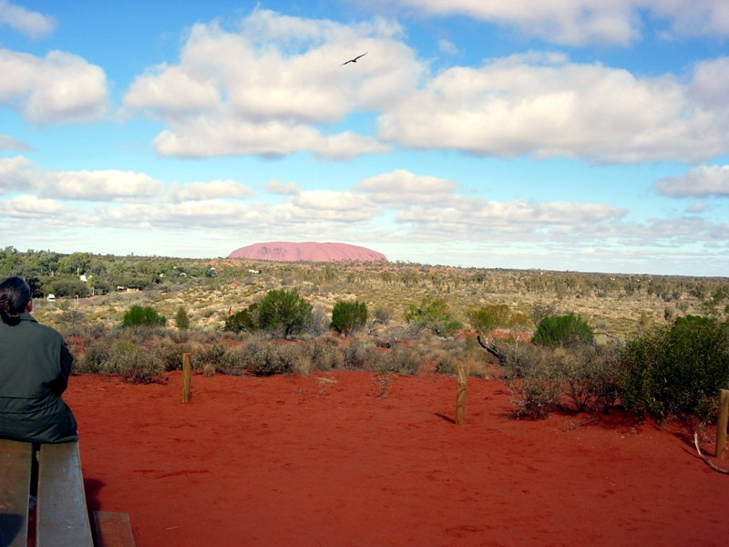
I didn't mess with the colors. It's really like that. And there's a lot of that. On the flight to Sydney, it looked just like this for the first hour and a half. This was taken from a mound that served as the center for a circle of accommodations. The place isn't overbuilt at all. There's only a handful of small resorts, all owned by the same company. They range from posh to campsites.
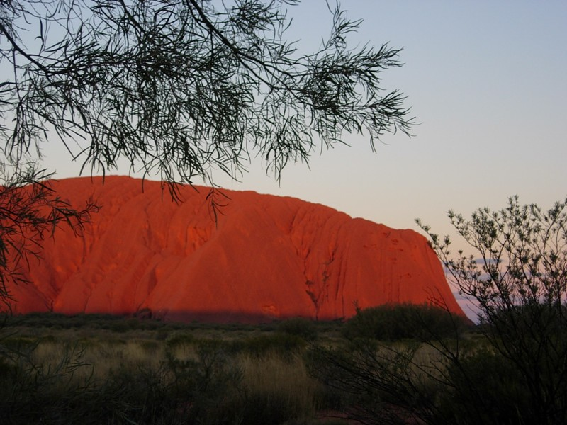
I took this picture to show that Uluru really does glow red at sunset. Many moons ago, there was a Himalaya-sized range in Western Australia. Only hills are left today. The runoff from the created this rock in the alluvial wash. It goes a couple kilometers down. It's eroding at 1 cm per year, whereas the surounding sand is washing away at 3 cm per year, so the visible rock is growing. In another millenium, another hump will emerge, creating the beginnings of a second Uluru to the west.
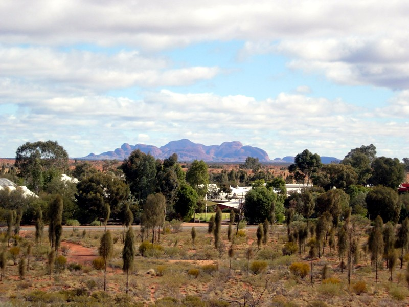
The accommodations range from posh to campsites. Facing away from Uluru on the central mound, you see the posh hotel and Kata Tjuta in the background.
But where were the Anangu, the local aboriginals? They weren't staffing the resort. Or the cultural center. There were a few hanging around the resort area and airport. I asked several people, and it boils down to an absence of the notion of clock time, or that anything but tradition can create an obligation. In short, you hire them and they never show up. I saw a van labeled "Anangu jobs". Neither of the people in the van were Anangu. It seemed perverse at the time (I know where two jobs can be found!), but on reflection you might not want a bus driver who does things when it feels right.
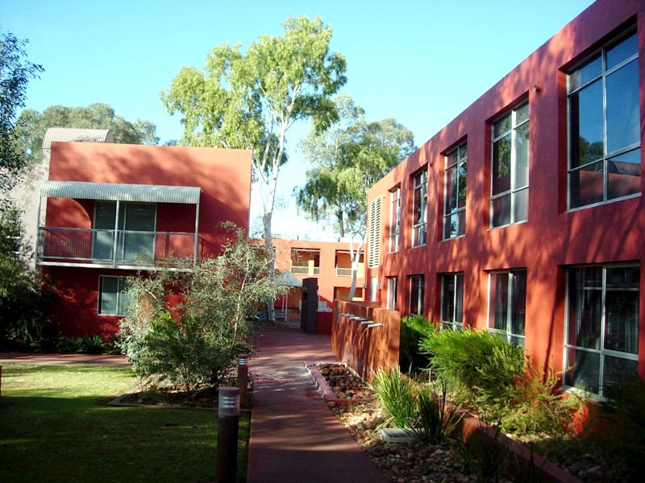
I ended up at a midrange resort, the Lost Camel. Cheerier name than the Dead Explorer, after Paedric McKee, who was riding the camel. The resorts have a policy that you have to show your room key to drink, to help keep the dry aboriginal reserves in the area dry. The reserves that are closer to towns are anything but dry, with disasterous results. Here it's a bit isolated. The road to Perth is unpaved, requires 4WD, and there's a sign whinging about the next petrol being 815km distant.
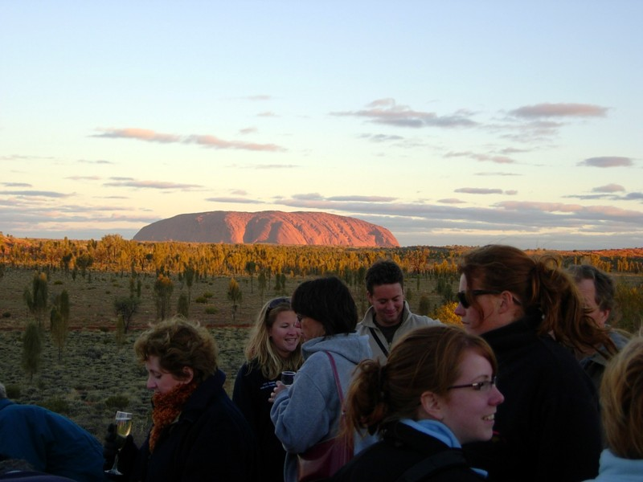
I attended a "Sounds of Silence" dinner under the stars, with a dig concert and a talk by an astronomer. Here are people enjoying the canapes (see below). The astronomer told aboriginal stories about the stars between dinner and dessert. One was about a woman who, in a time of famine, set off determined to feed her family or die. When she found nothing, she wept, and her pool of tears attracted an ant. She followed the ant back to its den and found enough wood ant larvae to feed her family.
"Now", the astronomer said, "You will be able to properly appreciate dessert."
I used to obsess that I hadn't seen the stars in the southern circumpolar sky. Now, in the course of a year, I've seen them, clear down to Octans ("That's where the South Star will go when we get one"). Unfortuately, I'm obsessing about the stars I haven't seen behind the Coalsack Nebula. It's huge, located near the Southern Cross, and does look like an emu once that's pointed out. I'll have to check them out between incarnations.
The aboriginal story about the Milky Way is that it's a river a god built to float his prize canoo after a jealous wife made him take it upstairs to the sky.
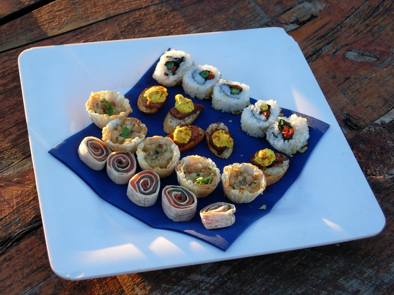
From left to right: smoked salmon, crocodile with macadamia nuts in puff pastry, kangaroo with something yellow on top, and sushi. Everybody thinks macadamias are native to Hawaii, but actually they're from Oz. Don't know why they haven't built them into an export industry like Mauna Loa did.
I tried the crocodile because I like macs. I was a bit tentative about it because I remember trying turtle soup once not stopping to think that turtles aren't fish. It was the most tamasic thing I've ever tasted, far worse than beef, heavy and crude and toxic and ugly. Couldn't tell the croc was there.
The dinner was good, but I tried kangaroo for the first time and was disappointed to find that I like it. Wasn't sure I could even eat the cute furry harmless lovable critters. They taste like a little deer, but much less gamey, and seem like the least tamasic meat I've tasted. They're available at any grocery store, but I don't think I'll be tempted. It's one thing when they're prepared in peppercorn glaze, another to drag bloody hunks home from the store.
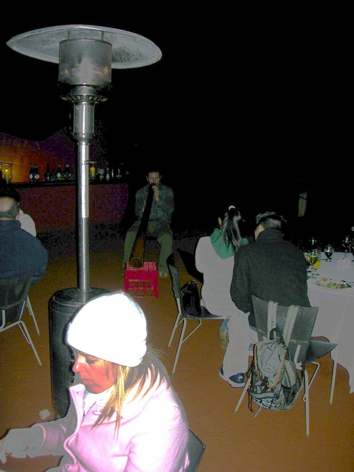
Ended up at a table with a family from England, one from the US, and a redneck greenskeeper and his wife from Hunter Valley (northwest of Sydney, a major wine region). Made me realize how PC Canberra is. The wretched aboriginal victims were suddenly abo (a contemptuous term) dole blodgers. (In fact, they're both.)
My client organization used to handle indigenous affairs (that group was split off from Immigration recently into its own 700-person agency). Aboriginal names are generally secret to members of the same language group (there are around 250 aboriginal languages). If asked for a name, they'll give a random selection from the names they know, like drawing a ball from an urn. The only way to keep things straight is by human-based facial recognition. So monthly all the dole recipients get together around a table where an agent hands out what they call "sit-down money". Don't know if that sounds as damning to Australian ears as it does to American.
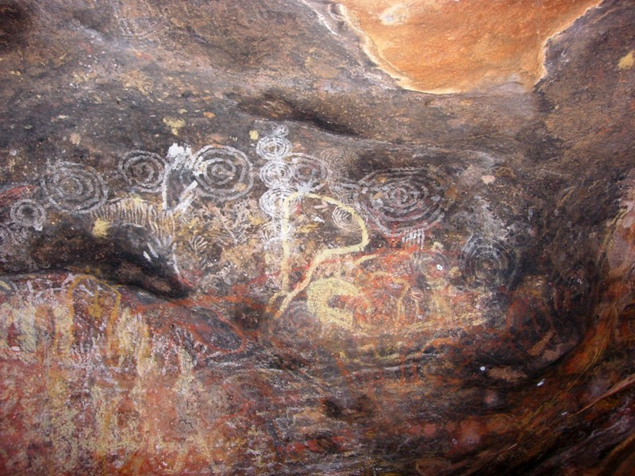
Rock art. The concentric circles represent places of interest, like billabongs and ceremonial sites. Rather than carvings, this cave has been painted and overpainted through the years. The first impression was kinda like a New York subway car.
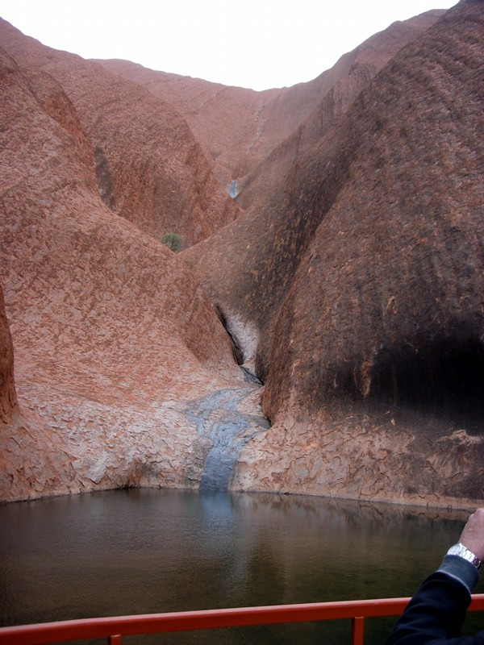
The downflow of rain (rock river?) feed the pool. The pool is in a V-shaped indentation, where game can be trapped. We were asked not to put hands in water; apparently the scent of human oils can scare off the roos. The indigenous way of hunting was (is?) to throw a boomerang low to sever tendons, then spear the animal. Or, throw a spear at the critter and follow the spear's drag mark to wherever it went down and club it.
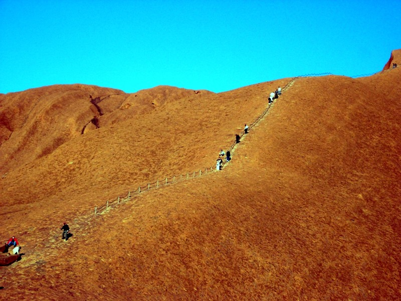
The Anangu people who own the rock don't want climbers. They don't climb it themselves, although the Ancestors (human/animal/god polymorphs) did. The guide books liken it to climbing an alter, but the sign at the base of the trail is a bit weaker, saying "if you fall off and die, we'll feel bad". Which invites the rejoinder, "So I won't fall." Actually, a respectable number of people do.
In fact, the entire rock is not sacred. There are specific sacred sites, often caves, that are used in initiations or other rituals. These are no-photography zones. The only person to violate this was some Hassidic-looking jerk who couldn't be disuaded by propriety, nor the threat of a $5K fine.
Old Charlie (now in his 80s) dragged a drill up the hill and put in the posts. The last three were out of line--he'd had more than a bit of VB the previous night. The government made him redrill them before paying. While tourism continues to grow, the number of climbers is shrinking. The government plans to wait until the numbers get sufficiently low, give three years' notice, and close the climb. I understand Charlie will be upset if the rip the poles out, but everyone else I met is in favor of closing it now.
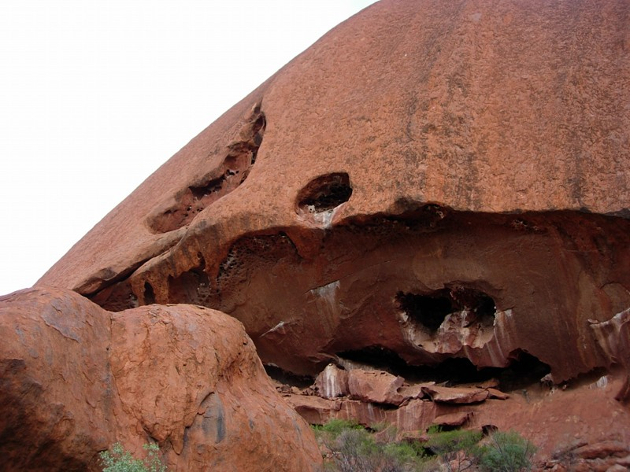
The sacred sites are often caves like this. The Anangu have a detailed lore that encompasses everything from theology to law, and it prescribes separate and secret lives for men and women. There is knowledge and rituals reserved for each; belonging to the community of men or women seems primary, and marriage a detail.
The lore includes stories like that of Kuniya and Liru. Kuniya was a woman/rock python/goddeess who lived at a place on Uluru where the rock striations like like a rock python. When Liru (a poisonous snake on the other side) killed her nephew, Kuniya spit her venom into a rock and hurled it to the other side, poisoning the soil (snake vine grows on that side). Now rock pythons are no longer venomous. There's a lot more to the story, but it seems designed to give kids a lot of useful information, such as how to identify poisonous snakes and plants. People like to give cosmic significance to the dreamtime stories, but they sounds more like "Welcome to the Stone Age, here's your information pack." The Anangu don't like the term "dreamtime" by the way. ("Whadda ya mean 'dream', it's real!") They prefer "creation time".
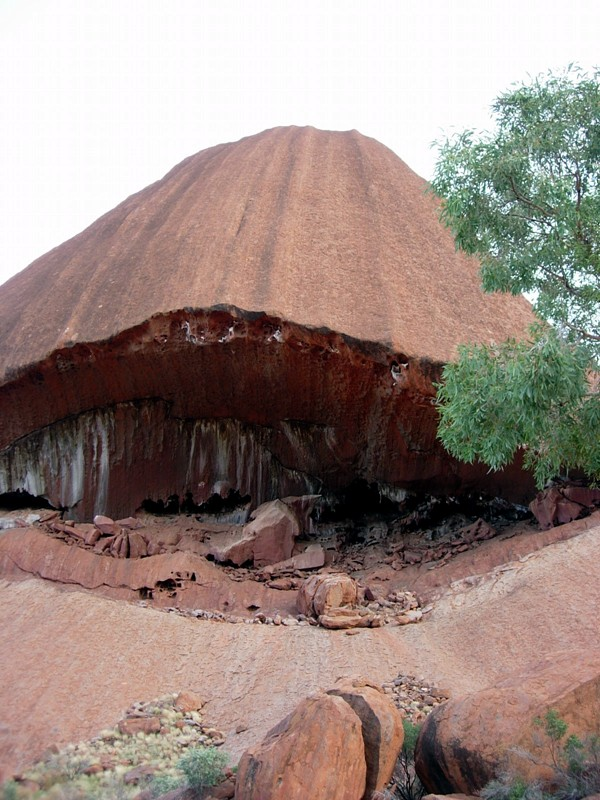
Site of future rockfall.
Got the tour guide for the dawn hike to contribute her favorite dumb tourist questions. The winners:
1 - In all apparent seriousness: "Is it styrofoam?"
2 - "What do you do with it at night?"
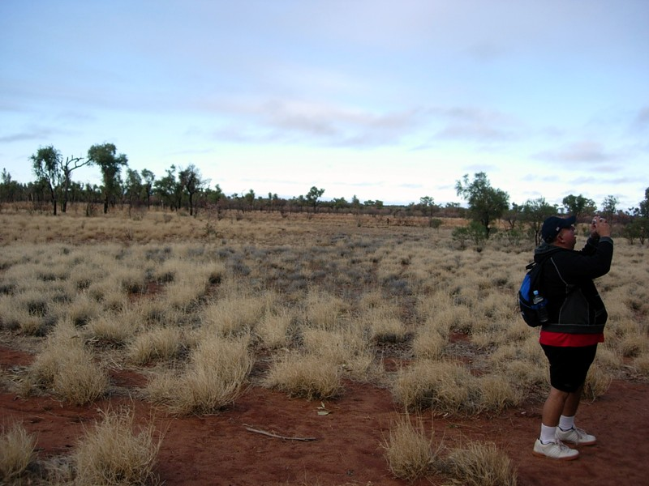
Rangers planted these bushes in the 1950s to stabilize the soil against wind erosion from planes landing at a tiny airport located right by the rock. They're now considered a pest. They burn too hot to be burned, even though the rest of the plants are used to fire, and Rangers and Anangu alike do controlled burns. So volunteers arrive to dig 'em out with pickaxes. 40% promptly grow back.
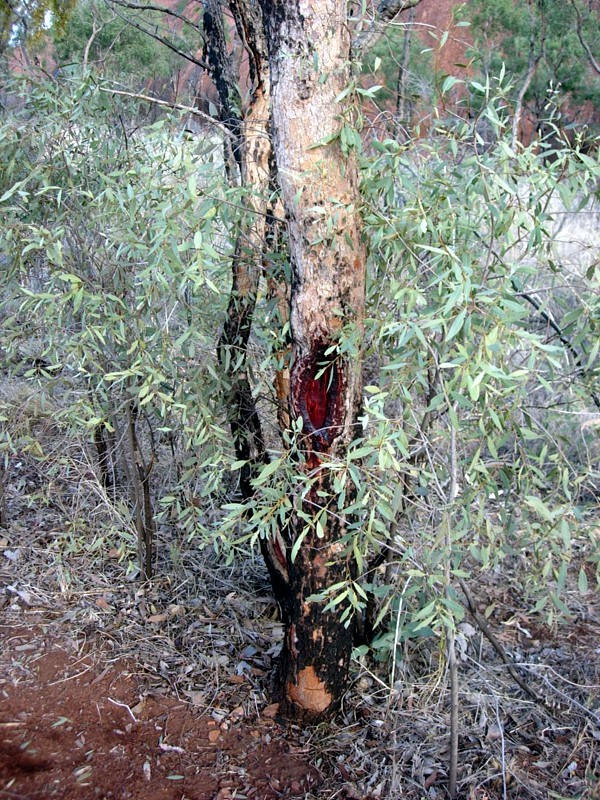
An aboriginal women carved a carrying bowl out of the bark (see below) of the eucalypt. I think when we call 'em eucalyptuses in the US, we're committing a double plural. Most people here call them "gums" anyway.
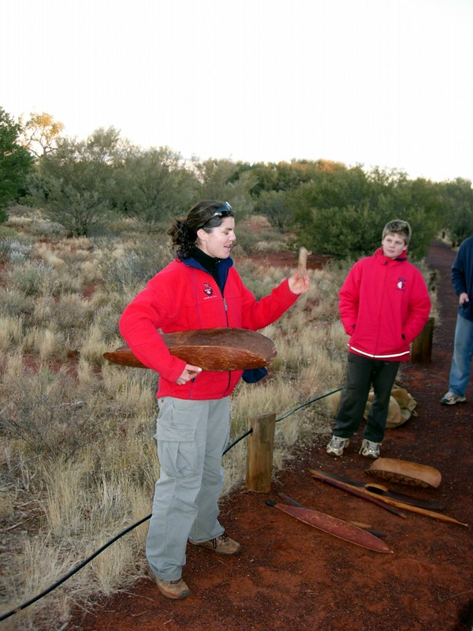
Tour guide with carrying bowl. You can tuck one under each arm and balance on on your head, on a donut woven from human hair. The digging stick can also be tucked between the elbows behind the back for lumbar support.
The cultural center (no photography inside, of all things) really illustrated how Australia is a gentler place. There were photographs and recordings of Anangu in the traditional stages of life (child, adult, elder). The woman elder had recently died, and the Anangu believe that the dead should be erased from the collective memory, so as not to hold them back. So the photograph had been covered with a cardboard flap, and there was a note asking that no one play the recording.
In the US, every kid (and half the adults) would have done it anyway because it was forbidden. And because somebody was stupid because if they really didn't want it played, they should have removed it. And because having paid the park fee, they were entitled to have the full experience. And because since there were no Anangu there, no one would be offended, so what did it matter? After all, if we respected all the world's superstitions, where would we be?
There were films of men's dances. To do one, clasp your hands behind your back, lean forward, and high-step forward about calf height. The music is 4/4 with emphasis on 2 and 4. To approximate the sound of the language, repeat "onomatopoeia" excitedly,
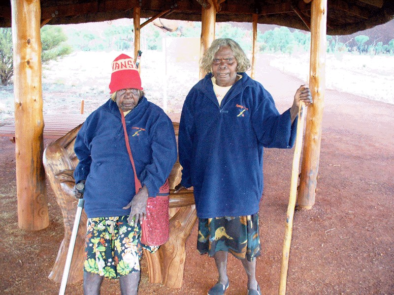
Here are two actual Anangu ladies. I don't fully understand the genesis of this photograph, since photography is a big no-no. (You can get trapped in photographs, ala "The Gasp" or "Expiration Date".) A coworker went the same weekend did, and these women, who taught the dot painting course, thought she really got it with her painting representing her hike around the rock that was both artistic and correct in the use of traditional symbols.
They took her aside, away from all the people who they'd turned down, and insisted that she photograph them. They show the happiness and dignity that people remark upon who are privileged to visit dry reserves.
The movie below is a pan up an Uluru cliffside.